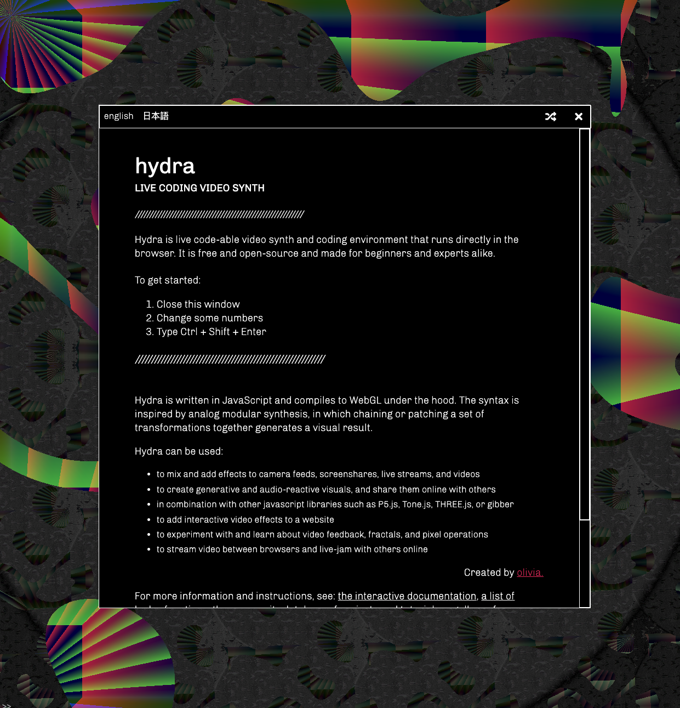
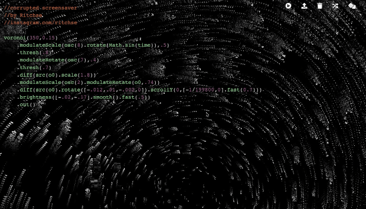
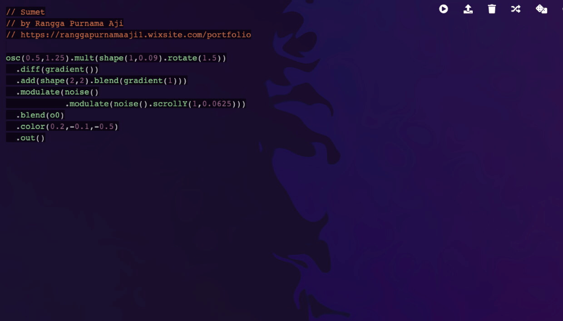

Livecoding visual patterns with Hydra
I had quite a lot of fun live coding visual patterns with Hydra.
Hydra is a live-codeable video synth and coding environment that runs directly in the browser. It is free and open-source, made for beginners and experts alike.

Reusable snippets
One of the coolest aspects of Hydra is that it is self-contained and browser-based.
A program can be easily shared, either as code or via a URL. For example, try this link, which renders the following snippet:
// ee_5 . FUGITIVE GEOMETRY VHS . audioreactive shapes and gradients
// e_e // @eerie_ear
//
s = () => shape(7.284).scrollX([-0.5, -0.2, 0.3, -0.1, -0.062].smooth(0.139).fast(0.049)).scrollY([0.25, -0.2, 0.3, -0.095, 0.2].smooth(0.453).fast(0.15));
//
solid().add(gradient(3, 0.05).rotate(0.05, -0.2).posterize(0.56).contrast(0.016), [1, 0.541, 1, 0.5, 0.181, 0.6].smooth(0.9)).add(s()).mult(s().scale(0.8).scrollX(0.01).scrollY(-0.01).rotate(0.303, 0.06).add(gradient(4.573).contrast(0.008), [0.684, 0.118, 1, 0.43].smooth(1.496), 0.5).mult(src(o0).scale(0.142), () => a.fft[0] * 4.226)).diff(s().modulate(shape(644.351)).scale([1.7, 1.2].smooth(0.392).fast(0.05))).add(gradient(2).invert(), () => a.fft[2]).mult(gradient(() => a.fft[3] * 8)).blend(src(o0, () => a.fft[1] * 40)).add(voronoi(() => a.fft[1], () => a.fft[3], () => a.fft[0]).thresh(0.7).posterize(0.419, 4).luma(0.9).scrollY(1, () => a.fft[0] / 30).colorama(0.369).thresh(() => a.fft[1]).scale(() => a.fft[3] * 2), () => a.fft[0] / 2).out();
//
speed = 1;

Livecoding
Snippets can be modified and composed on the fly.
There is also a handy "make random change" button that identifies parameters in the code and changes them automatically.
I wish we had something this easy to use yet powerful for musical livecoding!

A couple of nice examples
// Sumet
// by Rangga Purnama Aji
// https://ranggapurnamaaji1.wixsite.com/portfolio
osc(0.5,1.25).mult(shape(1,0.09).rotate(1.5))
.diff(gradient())
.add(shape(2,2).blend(gradient(1)))
.modulate(noise()
.modulate(noise().scrollY(1,0.0625)))
.blend(o0)
.color(0.2,-0.1,-0.5)
.out()
// Puertas II
// por Celeste Betancur
// https://github.com/essteban
osc(4.226, 0.122, 1).kaleid().mask(shape(4, 0.523, 1.91)).modulateRotate(shape(4, 0.1, 1)).modulateRotate(shape(1.428, 0.1, 0.633)).modulateRotate(shape(5.023, 0.143, 1.001)).scale(0.3).add(shape(4, 0.062, 0.071).color(0.433, 1, 1, 0.5)).rotate(() => time).out();